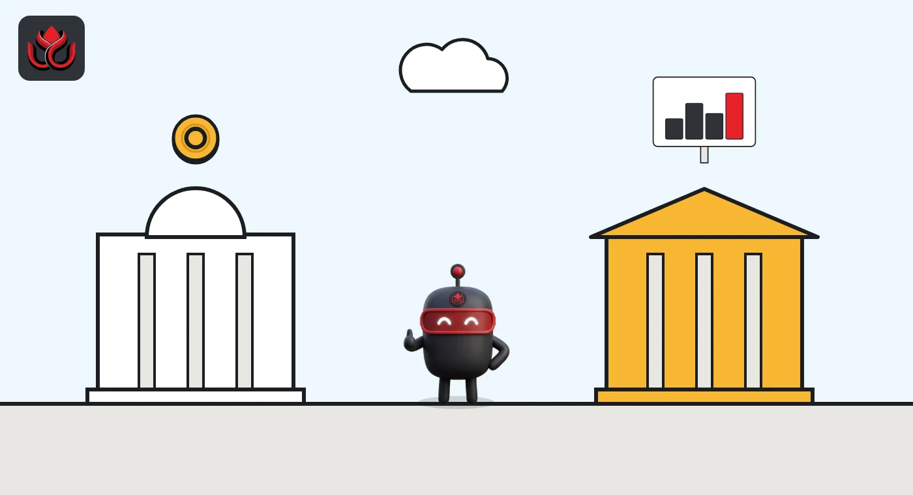
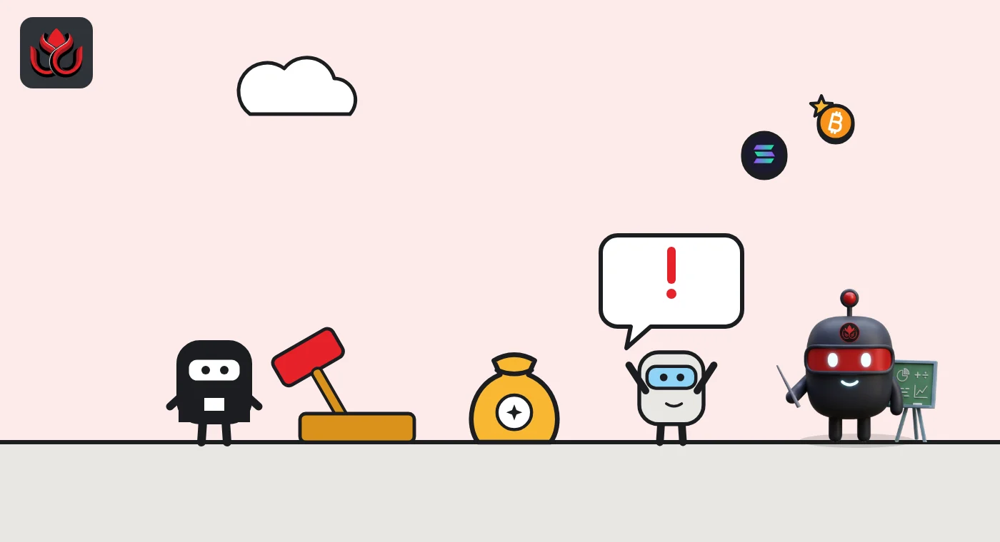

Kenya's crypto grace period ends November 4: KSh 25 million fines for unlicensed firms
Crypto firms already serving Kenya had one year to get licensed under the new VASP Act, and that year ends Wednesday. From November 4, 2026, a company operating without a license risks a fine of up to KSh 25 million.
Key points
- Crypto firms already operating in Kenya when the VASP Act took effect on November 4, 2025, have until November 4, 2026, to comply with it.
- The Central Bank of Kenya licenses wallets, payment processors and stablecoin issuers; the Capital Markets Authority licenses exchanges, brokers and token offerings.
- Operating without a license can cost a company up to KSh 25 million, and an individual up to KSh 10 million or five years in prison. The final rules, in force since July 22, 2026, also reach foreign firms that target Kenyan users.
What happens on November 4
Crypto firms that were already operating in Kenya when its new virtual asset law took effect have until Wednesday, November 4, 2026, to comply with it. After that, a company running a crypto business without a license faces a fine of up to KSh 25 million. The law calls these businesses virtual asset service providers, or VASPs. Section 47 of the Virtual Asset Service Providers Act, 2025 gives existing providers one year from its start to comply.
The Central Bank of Kenya said in a public notice dated November 18, 2025, that the Act (Act No. 20 of 2025) was published in the Kenya Gazette on October 21, 2025, and took effect on November 4, 2025. The President assented to it on October 15, 2025, according to the Act's text.
Put simply: from November 4, 2026, a company offering crypto services in or from Kenya without a license under the Act is outside the transition window. Section 8 bars anyone from carrying on virtual asset services in or from Kenya without a license.
Who licenses whom
The Act splits supervision between two regulators. Its First Schedule assigns each type of service to one of them.
- Central Bank of Kenya (CBK): virtual asset wallet providers (custodial wallets), virtual asset payment processors and stablecoin issuance.
- Capital Markets Authority (CMA): virtual asset exchanges, brokers, investment advisers, asset managers, offering providers (initial coin offerings), tokenization and token issuance platforms.
That means a local exchange and a stablecoin issuer would deal with different regulators, and a firm offering both trading and custody may need to look at both lists. The CBK's notice gave separate contact points: vasp@centralbank.go.ke for the central bank and virtualassets@cma.or.ke for the CMA.
For a comparison with another new licensing regime, see our explainer on Vietnam's crypto law.

What a licensed firm needs
The Act sets the basic shape of a licensed firm. Under its text, an applicant must be a company limited by shares registered under Kenya's Companies Act, which can include a foreign company registered under that law.
- Office: a physical office in Kenya where the business is carried out (section 19).
- Board: at least three directors who are natural persons, and no director may sit on the boards of more than two licensees (section 20).
- Bank account: a bank account in Kenya (section 24).
- Money: capital and solvency levels "as may be prescribed", meaning set in regulations rather than in the Act itself (section 22).
- Fitness: skilled staff, cybersecurity measures, consumer and data protection, and fit and proper directors and senior officers (section 10).
The Act also bans licensees from offering mixer or tumbler services or other anonymity-enhancing services (section 21). Mixers pool and shuffle coins so that transfers are hard to trace. Licensees also carry duties to prevent money laundering, terrorism financing and proliferation financing, the CBK notice said.
What breaking the law costs
The heaviest criminal penalties in the Act apply to operating without a license. Under section 40(3), an individual faces a fine of up to KSh 10 million, up to five years in prison, or both. A company faces a fine of up to KSh 25 million.
Other offenses carry lower caps. Section 40(2) sets fines of up to KSh 7 million or three years in prison for individuals and up to KSh 20 million for companies. Section 40(1) sets KSh 3 million or three years for individuals and KSh 5 million for companies. Regulators can also impose administrative penalties of up to KSh 3 million on individuals and KSh 10 million on companies for some breaches (section 39).
Maximum fines under Kenya's VASP Act, 2025
KSh million
Source: Virtual Asset Service Providers Act, 2025, section 40

The detailed rules and who they reach
When the Act took effect, licensing could not yet start. The CBK said in November 2025 that licensing would begin once the National Treasury issued regulations, and that neither the CBK nor the CMA had licensed any provider under the Act at that point. It urged the public to be careful with any firm claiming otherwise.
The Treasury then published draft Virtual Asset Service Providers Regulations, 2026 for comment, with a deadline of April 10, 2026, according to a CBK notice dated March 18, 2026. The CMA now lists "The Virtual Asset Service Providers Regulations 2026" under regulations on its regulatory framework page. The final text is Legal Notice 134 of 2026, which Kenya Law shows as published in the Kenya Gazette and in force on July 22, 2026.
The regulations spell out how far the law reaches. Under regulation 4, a firm counts as operating "in or from Kenya" if it actively targets Kenyan consumers or earns income from Kenya, even with no physical presence there. Applicants must file a business plan, proof of source of funds, a long list of policies and an independent systems audit with a penetration test (regulation 6). The regulator must decide within 30 days once a file is complete. Licenses are renewed every year, and licensees must send monthly reports by the 10th of the following month (regulations 11 and 26).
Capital levels and fees sit in schedules to the regulations, which this story does not cover. Neither regulator had published a list of licensed providers on the pages we checked as of November 2, 2026.
Timeline
President assents to the Virtual Asset Service Providers Act, 2025
Act published in the Kenya Gazette (Act No. 20 of 2025)
Act takes effect; one-year transition starts for existing providers
CBK notice: no providers licensed yet, licensing to follow regulations
Draft VASP Regulations, 2026 published for comment
Comment deadline on the draft regulations
VASP Regulations, 2026 (Legal Notice 134 of 2026) gazetted and in force
Transition period for existing providers ends
LC Insight analysis
This section is our reading of the facts above, not a statement of fact.
- We think the deadline bites hardest for foreign platforms that serve Kenyans without a local company. A Kenyan office, a local bank account and a board of real people cost money, and some firms may cut services instead.
- The two-regulator split will likely cause friction for firms that do several things at once, such as trading, custody and a stablecoin. They may need two licenses and answer to two supervisors.
- If few firms hold licenses after November 4, regulators face a hard call on how to treat firms that applied but are still waiting. A public list of licensees would be the simplest way to help users tell them apart.
What's next
- Any CBK or CMA notice on enforcement after November 4, 2026
- Publication of the first lists of licensed virtual asset providers
- Whether large global exchanges set up Kenyan entities or restrict Kenyan users
- Rules for stablecoin issuers under the CBK
Disclaimer. This article is based on public information and the sources listed below as of the update time shown. It is for information only and is not investment, legal or tax advice. Figures may change as companies and authorities publish new data.
Sources
- Virtual Asset Service Providers Act, 2025 (Act No. 20 of 2025), via Capital Markets Authority
- Central Bank of Kenya, Public Notice on the commencement of the VASP Act, 2025 (November 18, 2025)
- Central Bank of Kenya, Invitation for comments on the draft VASP Regulations, 2026 (March 18, 2026)
- Capital Markets Authority, Regulatory framework
- Kenya Law, The Virtual Asset Service Providers Regulations, 2026 (Legal Notice 134 of 2026)